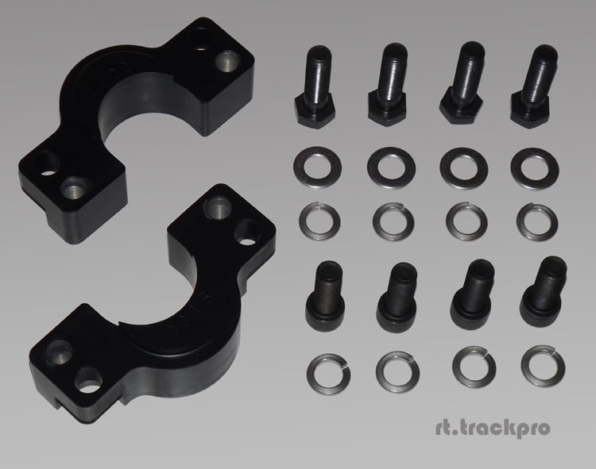

-
The only accurate way to give you that information is to chart various static cambers before and after at several heights… the more camber you have, the more it gives you
And the other reason is, because it adds more camber on turn in, even if you zeroed it for straight ahead, it's a different animal
Which camber plates are you talking about, zach's for stock struts? -
From my experience adding 3/4" offset (for a standard height strut) will garner about 2.2* of negative camber.
I had these made up two years ago and that's what it worked out to be. These are 3/4" offset x 1.5" high.
https://www.dropbox.com/s/4t499wjbx0…%20spacers.jpg
Next one will also have 3/4" forward offset to add about 2* of caster.My ride: 1984 300ZXT Anniversary Edition, SCCA BSP
See: http://z31performance.com/showthread…ight=vegasz31t -
These are 1-1/4" tall and slightly under 3/4" offset… people have reported 2.1 to 2.3 degrees of camber to me, so we're in the ballparkvegasZ31T;n765726 wrote: From my experience adding 3/4" offset (for a standard height strut) will garner about 2.5* of negative camber. I had these made up two years ago and that's what it worked out to be. 3/4" offset x 1" high. -
I just found this I will take a set send me the payment info1984 300ZX - 1988 VG30T Engine, Trans, Diff, ECU
1987 300ZX TURBO - ( Parts Car ), 1988 300ZX TURBO - ( Parts Car )
1972 240Z -- Full restore - L28ET L6 Engine from 280zx, T-5 transmission, Rear diff from the 87
1998 Mazda B-2500, And a lot of bikes -
G-E, I have some questions that I hope you can answer.
1) What is the benefit of choosing aluminum over steel, weight saving?
2) Do your RCA spacers require any modification at all? Acadianasportscars.com states that a small modification is required to fit their RCA's.Their site states they "require a bare minimum of modification to N/A cars and 84-86 Turbo". This also seems to be the case for the ones from tf-works.com as one review mentions "Would have given 5 stars, but modifications to my lower control were required and this was not mentioned in the description to the product. So be aware of this possibility, as the end of the LCA may rub the back of the brake rotor."
3) Lastly, do you have any allum or steel in stock? -
1. Yes aluminum is for weight savings, anyone with normal sized wheels and normal activities including aggressive driving would be well served by aluminum…
Steel parts are "heavy duty" let's call them, they will take serious abuse, with a weight premium per side -- of course there's other ways to offset the weight
2. The offset gives you increased control arm to rotor clearance, there is no modification required, just basic surface prep and cleanup
3. Both types are in stock
On a side note: I would recommend steel parts if you regularly disassemble your suspension, the aluminum threads will wear faster, though this is just a longevity suggestion -
Yeah, I was really interested in the steel - how can I go about ordering a set? I'm going to mate them with my Powertrix coilovers. -
PM'ded… is it 10 yet? -
PM sent. -
Because I've been asked about the hardware a few times, here's everything you get..
 -
The picture won't load

{kind=link}
{kind=link}
Copyright © 2006–. All rights reserved. Privacy Policy